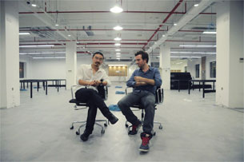

"There should be more agencies challenging
the status quo. Fred & Farid is a good example
of a young independent agency that has succeeded brilliantly.
But we need 10 or 20 Fred & Farids."
October 30th 2013
Alexandre Deboute
Le Figaro.

This new agency is 100% social media orientated. In just one year, their Chinese office has worked for 27 brands in China, including Porsche, Coca-Cola, Shang Xia, Sunning, Sogou, Avène… and renowned groups like L’Oréal and Pernod Ricard.Fred & Farid's clients’ reactions were unanimously enthusiastic about the big opening of their very own new building in Paris in 2011:
"They have a real talent, the ability to capture the spirit of the times through emotions"
2011
Hugues Pietrini
CEO France Orangina-Schweppes Group
"There is one word that springs to my mind: Pride. I am proud to have chosen you as our agency when you were still small“
Jean-Paul Torris Vice President Bongrain SA
"They have created the campaign we've been dreaming of, it was a great pleasure to work with them and it still is"
Caroline Guillaumin
Communication Director, Société Générale